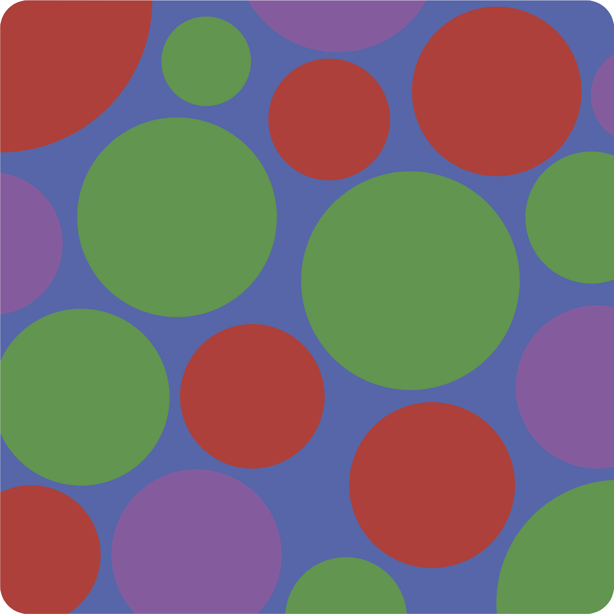

🔢
Modeling
Estimate geophysical observables using rock physics
Automatic Differentiation enabled probabilistic inference of rock physics

You can install Porosity.jl on Julia by running:
using Pkg
Pkg.add("Porosity.jl")A large part of the package has functionalities borrowed from the Very Broadband Rheology Calculator (VBRc), coded up in MATLAB.
The Very Broadband Rheology Calculator (VBRc) provides a useful framework for calculating material properties from thermodynamic state variables (e.g., temperature, pressure, melt fraction, grain size) using a wide range of experimental scalings. The VBRc at present contains constitutive models only for olivine, but may be applied to other compositions (at your own risk). The main goal is to allow easy comparison between methods for calculating anelastic-dependent seismic properties, but the VBRc can also be used for calculating steady state viscosity, pure elastic (anharmonic) seismic properties and more. It can be used to fit and analyze experimental data, infer thermodynamic state from seismic measurements, predict measurable properties from geodynamic models, for example.
∘ Dai_Karato2009
∘ Gaillard2008
∘ Jones2012
∘ Ni2011
∘ Poe2010
∘ SEO3
∘ Sifre2014
∘ UHO2014
∘ Wang2006
∘ Yang2011
∘ Yoshino2009
∘ Zhang2012
∘ const_matrix
The whole list can be obtained by running `subtypes(AbstractCondModel)`∘ SLB2005
∘ anharmonic
∘ anharmonic_poro
The whole list can be obtained by running `subtypes(AbstractElasticModel)`∘ HK2003
∘ HZK2011
∘ xfit_premelt
The whole list can be obtained by running `subtypes(AbstractViscousModel)`∘ andrade_analytical
∘ andrade_psp
∘ eburgers_psp
∘ premelt_anelastic
∘ xfit_mxw
The whole list can be obtained by running `subtypes(AbstractAnelasticModel)`Two phase :
∘ HS upper bound
∘ HS lower bound
∘ Modified Archie's law
Multiple phase :
∘ HS upper bound
∘ HS lower bound
∘ Generalized Archie's law